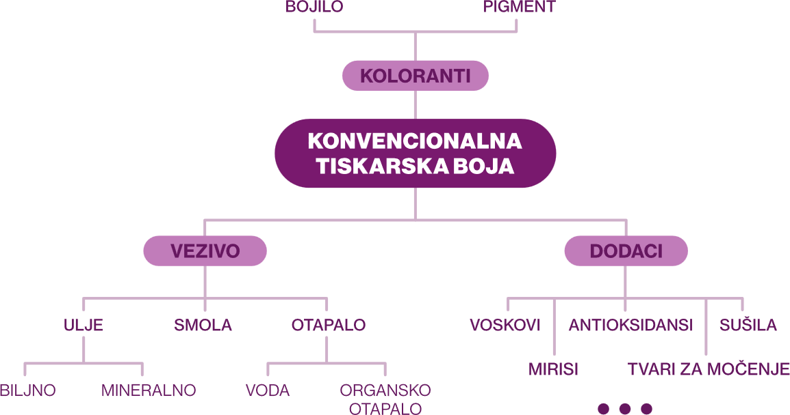
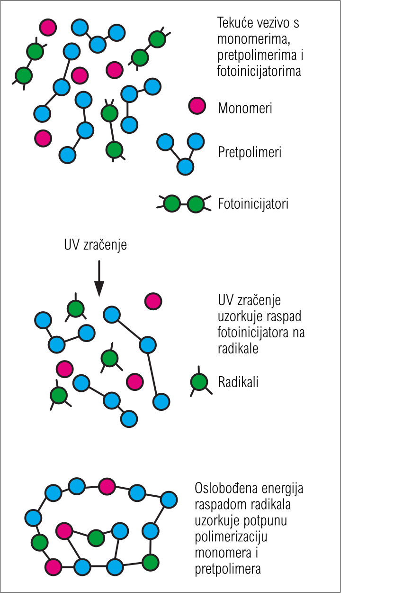
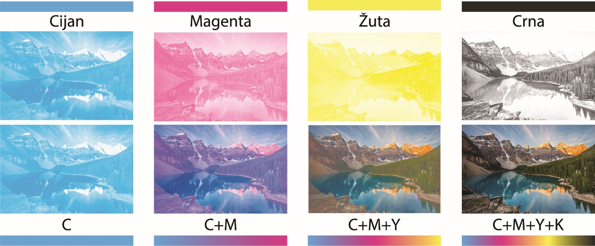
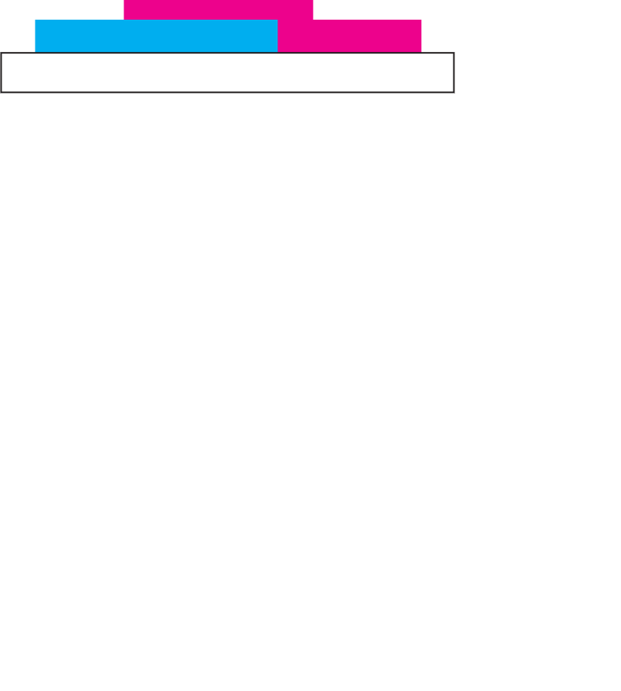
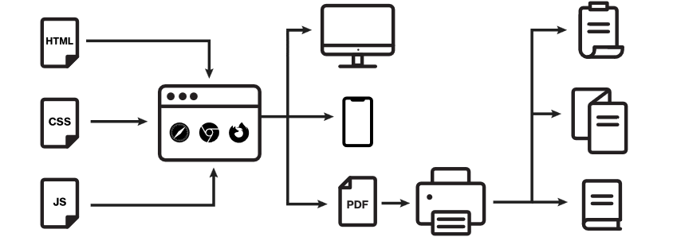

SVEUČILIŠTE U ZAGREBU
GRAFIČKI FAKULTET
DIPLOMSKI RAD
Smjer: Dizajn grafičkih proizvoda
Mentor:
Izv. prof. dr. sc. Irena Bates
Studentica:
Sara Iva Merlić
Zagreb, 2026.
Razvoj UV sušećih tiskarskih boja omogućio je brži i tehnološki napredniji tisak na različitim vrstama podloga, no niži troškovi proizvodnje zadržali su značajnu primjenu konvencionalnih tiskarskih boja u tiskarskoj industriji. Kako bi se dokazala potencijalno bolja kvaliteta konvencionalnih otisaka potrebno je usporediti reprodukcijske mogućnosti UV i konvencionalnih boja. U ovom radu istražit će se primanje boje na boju kod višebojnih reprodukcija s UV-sušećim i konvencionalnim tiskarskim bojama. Analiza će obuhvatiti UV otiske s jednom pokrivnom bijelom bojom, kao i konvencionalne otiske izrađene bojama triju različitih proizvođača. Cilj rada bio je utvrditi postoji li razlika u kvaliteti primanja boje na boju između konvencionalnih boja, kod kojih se prijenos boje odvija prema principu mokro na mokro, i UV-sušećih boja, kod kojih se prijenos boje ostvaruje prema principu mokro na suho.
Eksperimentalni dio rada uključivat će analizu UV i konvencionalnih otisaka pomoću mjernih i slikovnih metoda. Za mjerenje optičke gustoće, odnosno prijenosa boje na prethodnu boju koristit će se prijenosni spektrodenzitometar. Kako bi se izvela slikovna analiza površina otisaka snimit će se digitalnim mikroskopom Dino-Lite, pri čemu će se dobivene fotografije obrađivati u programu ImageJ radi procjene pokrivenosti površine s bojom. Dobiveni rezultati statistički će se usporediti kako bi se utvrdile razlike između UV i konvencionalnih sustava tiska te procijenila mogućnost postizanja slične kvalitete reprodukcije konvencionalnim bojama.
Dobiveni rezultati potvrđuju da se odgovarajućim odabirom konvencionalnih tiskarskih boja može postići kvaliteta višebojne reprodukcije usporediva s onom ostvarenom primjenom UV-sušećih boja. Analizirani parametri pokazali su da vrsta tiskarske boje utječe na učinkovitost primanja boje na boju i pokrivenost površine, ali UV-sušeće boje nisu u svim slučajevima ostvarile bolje rezultate. Kvaliteta višebojnog otiska ne ovisi isključivo o vrsti tiskarske boje, već i o međusobnoj interakciji svojstava boje, kombinaciji boja i uvjetima tiskarskog procesa. Za digitalnu pripremu i prijelom diplomskog rada koristiti će se web-to-print sustav temeljen na Paged.js tehnologiji, koji omogućuje preciznu kontrolu tipografije i strukture stranica te generiranje tiskarski spremnog PDF dokumenta.
Ključne riječi: prijenos boje, višebojne reprodukcije, tiskarske boje, UV sušeće boje, konvencionalne boje, web-to-print
The development of UV-curable printing inks has enabled faster and more technologically advanced printing on a wide range of substrates. However, the lower production costs associated with conventional printing inks have ensured their continued widespread use in the printing industry. To determine whether conventional prints can achieve comparable or even superior print quality, it is necessary to compare the reproduction capabilities of UV-curable and conventional printing inks. This thesis explores ink trapping in multicolour reproductions printed with UV-curable and conventional printing inks. The analysis includes UV prints produced with a single opaque white ink, as well as conventional prints produced using inks from three different manufacturers.
The aim of this study was to determine whether there is a difference in ink trapping quality between conventional inks, where ink transfer occurs according to the wet-on-wet principle, and UV-curable inks, where ink transfer follows the wet-on-dry principle. The experimental part of the study includes the analysis of UV and conventional prints using both instrumental and image-based methods. Optical density and ink trapping to the previously printed ink layer will be measured using a portable spectrodensitometer. For image analysis, the printed surfaces will be captured using a Dino-Lite digital microscope, and the acquired images will be processed with ImageJ software to evaluate ink coverage.
The obtained results confirm that, with an appropriate selection of conventional printing inks, a quality of multicolor reproduction comparable to that achieved with UV-curing inks can be obtained. The analyzed parameters showed that the type of printing ink influences the efficiency of ink trapping and surface coverage; however, UV-curing inks did not achieve better results in all cases. The quality of multicolor reproduction does not depend solely on the type of printing ink, but also on the interaction between ink properties, ink combinations, and printing process conditions. The digital preparation and page layout of this thesis will be made using a web-to-print system based on Paged.js technology, which enables precise control of typography and page structure while generating a print-ready PDF document.
Keywords: trapping, multicolor reproductions, inks, UV inks, conventional inks, web-to-print
Zbog različitih mehanizama sušenja konvencionalnih i UV-sušećih tiskarskih boja opravdano je očekivati razlike u učinkovitosti primanja boje na boju te u kvaliteti višebojne reprodukcije. Konvencionalne tiskarske boje dugi su niz godina imale vodeću ulogu u tiskarskoj industriji, a njihov se sastav kontinuirano prilagođavao zahtjevima tiskarskih procesa i kvalitete reprodukcije. Razvojem tehnologije pojavile su se UV-sušeće tiskarske boje, koje omogućuju brzo očvršćivanje otiska i primjenu na različitim tiskovnim podlogama. Obje skupine tiskarskih boja imaju određene prednosti i ograničenja. Konvencionalne boje odlikuju se širokom primjenom i dostupnošću, dok UV-sušeće boje omogućuju brzo očvršćivanje i neposrednu daljnju obradu otiska. S druge strane, konvencionalne boje ovise o uvjetima i vremenu sušenja, dok primjena UV-sušećih boja zahtijeva odgovarajuću opremu. Unatoč razlikama, obje se skupine i danas primjenjuju u tiskarskoj industriji, a njihov izbor ovisi o vrsti tiskarske tehnike, tiskovnoj podlozi, zahtijevanoj kvaliteti otiska i ekonomskim čimbenicima.
Višebojni tisak temelji se na subtraktivnom miješanju procesnih boja, čijim se međusobnim preklapanjem omogućuje reprodukcija širokog raspona boja i tonova. Kvaliteta konačnog otiska ovisi o nizu čimbenika, među kojima su svojstva tiskarske boje, tiskovne podloge i samog tiskarskog procesa. Posebnu važnost ima pravilno prihvaćanje uzastopno nanesenih slojeva tiskarske boje. Učinkovitost prihvaćanja boje na prethodno otisnuti sloj, odnosno ink trapping, utječe na reprodukciju sekundarnih i tercijarnih boja, zasićenost tonova i ukupnu kvalitetu otiska.
Cilj rada bio je utvrditi postoji li razlika u kvaliteti primanja boje na boju između konvencionalnih boja, kod kojih se prijenos boje odvija prema principu mokro na mokro, i UV-sušećih boja, kod kojih se prijenos boje ostvaruje prema principu mokro na suho. Na temelju postavljenog cilja istraživanja definirane su četiri istraživačke hipoteze. Prva hipoteza (H1) pretpostavlja da je konvencionalnim tiskarskim bojama moguće postići sličnu ili jednaku kvalitetu višebojne reprodukcije kao primjenom UV-sušećih tiskarskih boja. Druga hipoteza (H2) pretpostavlja da svi otisci dobiveni konvencionalnim tiskarskim bojama omogućuju jednaki prijenos boje na boju. Također se trećom hipotezom (H3) pretpostavlja da je kvalitativni parametar primanja boje na boju u korelaciji s pokrivenosti površine bojom. Posljednja hipoteza (H4) polazi od pretpostavke da otisci nastali primjenom UV-sušećih tiskarskih boja ostvaruju bolju pokrivenost površine bojom.
Eksperimentalni dio obuhvat će analizu probnih otisaka izrađenih UV sušećim i konvencionalnim tiskarskim bojama. U istraživanju analizirat će se otisci koji sadrže jednu pokrivnu bijelu boju s UV-sušećim bojama te s konvencionalnim bojama triju različitih proizvođača. Kvaliteta reprodukcije analizirat će se pomoću prijenosnog spektrodenzitometra Techkon SpectroDens kojim će se mjeriti integralna optička gustoća boja i primanje boje na boju. Uz mjernu analizu otiska izvest će se i slikovna analiza površina otiska. Otisak će se snimati digitalnim mikroskopom Dino-Lite, a dobivene fotografije analizirat će se u programu ImageJ kako bi se dobila informacija o pokrivenosti površine s bojom. Dobiveni rezultati statistički će se obraditi, usporediti i interpretirati. Na temelju rezultata donijet će se zaključak o mogućnosti postizanja usporedive kvalitete reprodukcije konvencionalnim bojama u odnosu na UV-sušeće boje.
Razvoj konvencionalnih tiskarskih boja pratio je rastuće potrebe tiskarske industrije za postizanjem sve kvalitetnijih i tehnološki zahtjevnijih reprodukcija. Pojava prvih specijaliziranih proizvođača tiskarskih boja u 16. stoljeću označila je početak njihova sustavnijeg razvoja, nakon čega su konvencionalne tiskarske boje dugi niz godina imale dominantnu ulogu u tiskarskoj industriji. Njihov se sastav tijekom vremena kontinuirano prilagođavao razvoju tehnologije tiska, zahtjevima kvalitete te ekološkim zahtjevima proizvodnje. Konvencionalne tiskarske boje su sustavi sitnih čestica pigmenata raspršenih u vezivu koje se mogu vezati za tiskovnu podlogu, a namijenjene su korištenju u konvencionalnim tehnikama tiska, poput dubokog, visokog, plošnog tiska te sitotiska. Njihova se svojstva i udio pojedinačnih komponenti znatno razlikuju ovisno o tehnici i brzini tiska, vrsti tiskovne forme, načinu nanošenja boje na tiskovnu formu, debljini nanosa na otisku, fizikalnim i kemijskim svojstvima tiskovne podloge, brzini sušenja te drugim čimbenicima. Međutim, mehanizam prijenosa tiskarske boje i vrsta sušenja najčešće određuju njenu strukturu. Ovisno o vrsti tiska, tiskarke boje se također znatno razlikuju u njihovoj konzistenciji koja se kreće od izuzetno rijetke (vodenaste), do vrlo viskozne (pastozne) [1]. Svaka komponenta tiskarske boje ima određenu funkciju u procesu tiska i omogućuje formiranje kvalitetnog otiska. Tiskarske boje se uglavnom sastoje od više međusobno usklađenih komponenti, pigmenta i/ili bojila, veziva, otapala i različitih aditiva [1] (Slika 1.).
Temeljna komponenta svake tiskarske boje su koloranti, pigmenti ili bojila koji tiskarskoj boji daju njeno obojenje. Pigmenti su organske ili anorganske krute tvari koje su netopive u vezivu. Zato što se pigmenti ne tope u vezivu njihovo osnovno svojstvo nakon boje je disperzitet. Što su čestice pigmenta manje disperzitet je veći. Obično, pigmenti imaju veličinu čestica od 0,1–2 µm [1]. Pigmenti se sastoje od molekula koje su međusobno umrežene kao kristali, te jedna čestica pigmenta može se sastojati od nekoliko milijuna molekula. Samo oko 10 % molekula leži na površini i samo te molekule i nekoliko ispod mogu apsorbirati i reflektirati svjetlost [1]. Bojila su organski spojevi u molekularnom obliku te se otapaju u vezivu. Za razliku od pigmenata molekule bojila otopljene su u vezivu i u potpunosti okružene otapalima tako da gotovo svaka molekula može apsorbirati fotone, što dovodi do većeg intenziteta boje [1]. Bojila imaju veći raspon boja. Pigmenti kao osnovni materijali su obično jeftiniji od bojila, ali zahtijevaju veće troškove prilikom prerade u tiskarsku boju jer se pigmentima moraju dodati disperzivna sredstva kako se ne bi aglomerirali. Bojila su, nasuprot tome, otopljena i ne talože se u tekućini [1]. Tiskarske boje obično sadrže pigmente. Sadržaj pigmenta, ovisno o tonu boje, je između 5 % i približno 30 % [1]. Primarna funkcija pigmenta je tiskarskoj boji dati njeno obojenje i odgovarajuća optička svojstva. Svojstva pigmenta pritom izravno utječu na svojstva i kvalitetu tiskarske boje. Među osnovna svojstva pigmenata ubrajaju se veličina čestica, odnosno disperzitet, pokritnost, izdašnost (intenzitet), svjetlostalnost odnosno postojanost prema svjetlu te tekstura. Navedena svojstva pigmenta direktno utječu na važna svojstva boja poput opaciteta (transparentnost), svjetlostalnosti te otpornosti na kemijske i mehaničke utjecaje. Kod višebojnog (CMYK) tiska opacitet je izrazito bitan jer boje moraju biti dovoljno transparentne kako bi se postiglo optičko miješanje boja i kvalitetna višebojna reprodukcija. Međutim, kod tiska na obojene tiskovne podloge poželjno je prvo otisnuti boju velikog opaciteta poput bijele kako bi na nju mogle otisnuti ostale boje.

Vezivo je tekuća komponenta tiskarske boje u kojoj su raspršene čestice pigmenta. Također daje boji plastičnost, viskozitet te omogućuje vezanje pigmentnih čestica na tiskovne podloge. Čestice pigmenta obavijene su ovojnicom veziva koja štiti fino dispergirane čestice od udruživanja u aglomerate i taloženja [1]. Vezivo po sastavu mogu biti viskozne tekuće tvari poput različitih ulja, otopine dobivene otapanjem krute smole u ulju, otopine dobivene otapanjem krute smole u organskom otapalu te vodena emulzija dobivena emulgiranjem krute smole s vodom. Međutim, u konvencionalnim postupcima tiska, veziva su obično smole otopljene u mineralnom ulju [1]. Ulja mogu biti različitog podrijetla, a dijele se na sušiva, polusušiva i nesušiva ulja. Sušiva i polusušiva ulja očvršćuju procesom apsorpcije kisika iz zraka, pri čemu se kisik veže na nezasićene dvostruke kovalentne veze između ugljikovih atoma u molekulama ulja. Ovim procesom, zvanim oksipolimerizacija, dolazi do međusobnog povezivanja molekula i stvaranja makromolekularne strukture, odnosno suhog i elastičnog filma na površini otiska. Nesušiva ulja se ne suše, već ih upija tiskovna podloga; mineralna ulja su nesušiva ulja. Ulja otapaju smole i tekuća su komponenta veziva. Smole u sastavu tiskarskih boja postižu kvalitetnije otiskivanje, ubrzavaju proces sušenja, čine boje čvršćima, fleksibilnijima i sjajnijima, povećavaju adheziju boja na tiskovnoj podlozi te čine boje postojanije na kemijske i mehaničke čimbenike. Smole mogu biti prirodnog ili sintetskog podrijetla. Otapala predstavljaju tekuće organske tvari koje imaju sposobnost otapanja smola prisutnih u tiskarskim bojama. Njihova je osnovna uloga održavanje smola u stabilnoj otopini tijekom proizvodnje, skladištenja i primjene tiskarske boje, čime se sprječava njihovo izdvajanje i taloženje. Nakon nanošenja boje na tiskovnu podlogu, otapala u pravilu trebaju ispariti u što kraćem vremenu kako bi se omogućilo stvaranje stabilnog suhog filma. Odabir odgovarajućeg veziva u formulaciji tiskarske boje može biti važniji od odabira pigmenta. Iako se isti pigmenti mogu primjenjivati u tiskarskim bojama namijenjenima različitim tehnikama tiska, veziva moraju biti prilagođena specifičnim zahtjevima tiskarskog procesa. Veziva se suše (stvrdnjavaju) na podlozi i time vežu pigmente [1]. Aditivi se dodaju tinti posebno kako bi utjecali na sušenje, ponašanje tečenja i otpornost na habanje. Vrsta aditiva ovisi o odgovarajućem postupku tiska [1]. Najčešći dodaci tiskarskim bojama su voskovi, ulja i masti, antioksidansi, sušila, tvari za močenje, tvari protiv sljepljivanja otisaka te mirisi.
Proces sušenja tiskarskih boja ima važnu ulogu u postizanju kvalitetnog i stabilnog otiska, a pritom je praćen brojnim kemijskim i fizikalnim procesima koji prvenstveno ovise o svojstvima veziva. Na konačna svojstva otiska značajno utječu način i brzina sušenja. Pojam sušenje uključuje sve procese koji se odvijaju nakon prijenosa tiskarske boje s gumene navlake ili tiskovne ploče na podlogu, čime se osigurava stabilna veza između podloge i tiskarske boje. Tiskarska boja se tijekom ovog procesa stvrdnjava, stvarajući preduvjet za pouzdanu završnu obradu tiska i kasniju upotrebu tiskanih proizvoda [1]. Ovisno o vrsti veziva i mehanizmu sušenja, kod konvencionalnih tiskarskih boja razlikuju se oksidativno sušenje, odnosno oksipolimerizacija veziva, sušenje prodiranjem ili upijanjem veziva u tiskovnu podlogu te sušenje hlapljenjem odnosno isparavanjem otapala. Oksipolimerizacija je kemijska reakcija, dok su sušenje upijanjem u podlogu i isparavanjem fizikalni procesi. Važno je da formulacija tiskarske boje omogućuje njezinu stabilnost tijekom tiska, odnosno sprječava prerano sušenje na valjcima tijekom rada i kraćih mirovanja, dok istodobno omogućuje brzo očvršćivanje i dobro prianjanje boje na tiskovnu podlogu nakon otiskivanja.
Sušenje prodiranjem (penetracijom) veziva u tiskovnu podlogu je fizikalni proces u kojem se tiskarska boja apsorbira u površinu upojne tiskovne podloge, najčešće papira ili kartona, i djelomično prodire u njegovu strukturu. Ovaj način sušenja za razliku od drugih mehanizama ne uključuje kemijsku promjenu veziva. Kada se tiskarska boja prenese na papir, njene komponente počinju prodirati u površinu i upijaju se u papir pomoću kapilarnih cijevi papira. Zato poroznost papira, odnosno broj pora po površini i njihov prosječni promjer, značajno utječe na brzinu upijanja tiskarske boje u podlogu, a time i brzinu sušenja. Penetracija tiskarske boje se poboljšava manjim veličinama pora supstrata [1]. Osim poroznosti tiskovne podloge, brzina sušenja ovisi i o tečljivosti tiskarske boje te močenju vlakanaca tiskarskom bojom. Penetracija ovisi prije svega o viskoznosti veziva i kapacitetu upijanja podloge [1]. Zato prevelika sposobnost upijanja tiskovne podloge može prouzročiti prebrzo prodiranje veziva u podlogu što rezultira zaostalim pigmentom na površini. Tiskarska boja tada gubi sjaj i otpornost na habanje, a pigmenti se mogu lako obrisati. Zato su papiri s visokom gustoćom malih pora obično optimalna podloga za kvalitetne rezultate tiska i sušenje (npr. umjetnički papir) [1]. Međutim, ako vezivo presporo prodire, boja se suši predugo što također nije pogodno za tisak.
Sljedeći fizikalni proces kojim se mogu sušiti konvencionalne tiskarske boje je sušenje hlapljenjem otapala, odnosno isparavanjem. Sušenje hlapljenjem karakteristično je za tiskarske boje čije se vezivo dobiva otapanjem smola ili sličnih tvari u odgovarajućem hlapljivom organskom otapalu. Tijekom sušenja tekuće otapalo se pretvara u parno stanje te se nastala para odnosno zrak opterećen parama otapala odvodi iz sušionika. U pravilu, potrebno je dovoditi samo onu količinu topline koja se utroši na isparavanje nastale pare, neovisno o načinu dovoda topline, uzimajući pritom u obzir ekonomsku učinkovitost procesa i pažljivo postupanje sa sušivim proizvodom. Ovo je pravilo osobito važno pri projektiranju sušila za tiskarske strojeve, budući da se podloga treba zagrijavati što je manje moguće zbog poznatih poteškoća, kao što su netočnost registra, promjene elastičnih svojstava podloge te njezino deformiranje [1]. Glavni parametri koji određuju brzinu sušenja hlapljenjem su temperatura površine, brzina strujanja zraka uz površinu tiskovne podloge te razlika parcijalnih tlakova. To znači da je za postizanje optimalne brzine sušenja vrući zrak potrebno kombinirati s učinkovitim strujanjem zraka.
Oksipolimerizacija je kemijska reakcija između sušivih ili polusušivih ulja koja se nalaze u vezivu tiskarske boje i kisika iz zraka. Ulje apsorbira kisik te se polimerizira u čvrsti film na površini otiska. Ovaj način sušenja karakterističan je za tiskarske boje koje u svom sastavu sadrže sušiva ili polusušiva ulja, što mogu biti ofsetne boje ili boje za visoki tisak na neupojnim podlogama. Film tiskarske boje oksipolimerizacijom dobiva odgovarajuće umrežavanje i konzistenciju protiv trljanja i abrazije, ali pritom mora zadržati dovoljnu elastičnost potrebnu za daljnju uporabu i funkcionalnost otisnutog proizvoda [1]. Kako bi proces oksipolimerizacije bio uspješan potrebno je osigurati dovoljnu količinu kisika za sloj tiskarske boje na arku u izlaznom slogu. Za tu svrhu se najčešće koriste prahovi. Oni povećavaju prostor između listova papira kako bi do otiska stigla dovoljna količina kisika, ali i za sprječavanje razmazivanja slike na donjoj strani gornjeg lista. Tiskarske boje koje se suše oksipolimerizacijom često sadrže određenu količinu sušila (sikativa) koji ubrzavaju proces sušenja. Kobalt ili mangan u kombinaciji s kiselinama topljivim u ulju koriste se kao katalizatori sušenja [1]. Ipak, dodavanje previše aditiva može uzrokovati sušenje tinte na valjcima bojanika tijekom tiska. Unatoč katalizatorima sušenja, sušenje oksipolimerizacijom traje prilično dugo.
Proces sušenja konvencionalnih tiskarskih boja ovisi o nizu čimbenika koji određuju brzinu odvijanja pojedinih mehanizama sušenja i konačna svojstva osušenog filma boje. Na proces pritom utječu sastav boje, osobito korištena veziva i aditivi, karakteristična svojstva materijala na koji se tiska (penetracijska sposobnost itd.), uvjeti tiska (količina nanosa boje, brzina tiska), klimatski uvjeti (vlažnost, sobna temperatura) te konstrukcija sušilice (struja zraka na površini boje, razdoblje reakcije) [1]. Međutim, temperatura je odlučujući čimbenik – više temperature ubrzavaju brzinu polimerizacije, smanjuju viskoznost boje kako bi se poboljšalo prodiranje boje te ubrzavaju isparavanje otapala.
Konvencionalne tiskarske boje prisutne su na tržištu već dugi niz godina, a prije razvoja i primjene UV-sušećih boja predstavljale su dominantno rješenje u tiskarskoj industriji. Dugogodišnjim razvojem i usavršavanjem njihove formulacije postignuta su brojna poželjna svojstva, zbog čega su i danas široko zastupljene u tiskarskoj proizvodnji. Iako njihova cijena može varirati ovisno o formulaciji, tehnici tiska i zahtijevanim svojstvima boje, konvencionalne tiskarske boje u pravilu su cjenovno povoljnije u usporedbi s UV-sušećim bojama. Pravilnom formulacijom, usklađenošću s tiskovnom podlogom i tiskarskim strojem te odgovarajućim načinom sušenja omogućuju kvalitetan prijenos boje, dobru reprodukciju tonova i zadovoljavajuća svojstva konačnog otiska. Smole kao jedna od važnih komponenti tiskarskih boja pridonose kvaliteti otiskivanja, fleksibilnosti, sjaju i čvrstoći bojenog filma, poboljšavaju adheziju boje na tiskovnu podlogu te povećavaju njezinu otpornost na kemijske i mehaničke utjecaje. Zbog svoje svestranosti i primjene u različitim tehnikama tiska, konvencionalne tiskarske boje mogu se koristiti na širokom rasponu tiskovnih podloga, od upojnih materijala poput papira i kartona do neupojnih podloga poput plastike te različitih filmova i folija, ovisno o formulaciji boje i zahtjevima tiskarskog procesa. Dodatna prednost konvencionalnih tiskarskih boja je njihova dugogodišnja primjena i razvijena tehnologija proizvodnje, zbog čega postoji širok raspon formulacija prilagođenih različitim tiskarskim procesima i zahtjevima.
Međutim, unatoč brojnim prednostima, konvencionalne tiskarske boje imaju i određena ograničenja. Jedno od njih odnosi se na potrebu za uspješnim procesom sušenja, pri čemu konačna svojstva otiska ovise o uvjetima i vremenu potrebnom za njegovo sušenje. Sušenje konvencionalnih boja je puno sporije u usporedbi s UV-sušećim bojama. Konvencionalne boje, ovisno o formulaciji, mogu se sušiti do nekoliko sati dok se UV-sušeće očvršćuju gotovo trenutno pod utjecajem UV zračenja. Sušenje konvencionalnih tiskarskih boja osjetljivo je na uvjete okoliša, pri čemu promjene temperature, relativne vlažnosti zraka i dostupnosti kisika mogu značajno utjecati na brzinu i učinkovitost procesa sušenja. Nekvalitetno sušenje može značajno utjecati na konačna svojstva otiska. Iako je tisak na neupojne podloge moguć, neodgovarajuća formulacija boje i neusklađenost s tiskarskim strojem mogu ograničiti ostvarivanje optimalnih svojstava otiska u usporedbi sa specijaliziranim sustavima boja namijenjenima takvim podlogama. Konvencionalne tiskarske boje na bazi otapala sadrže hlapljive organske spojeve (HOS) koji tijekom tiskarskog procesa mogu negativno utjecati na okoliš, uključujući tlo i vodu u slučaju nepravilnog zbrinjavanja. U prisutnosti sunčeve svjetlosti i dušikovih oksida hlapljivi spojevi mogu sudjelovati u fotokemijskim reakcijama te pridonijeti nastanku prizemnog ozona i drugih onečišćujućih tvari [2]. Štetne emisije hlapljivih organskih spojeva mogu se smanjiti primjenom tiskarskih boja na bazi vode.
UV-sušeće tiskarske boje pripadaju posebnoj skupini tiskarskih boja čije se sušenje temelji na djelovanju različitih elektromagnetskih zračenja. Boje ostaju u tekućem stanju do trenutka izlaganja ultraljubičastom (UV) zračenju odgovarajuće valne duljine (približno 100–380 nm), pri čemu dolazi do vrlo brze lančane reakcije koja dovodi do trenutnog sušenja boje. Kemijska reakcija do koje dolazi naziva se fotopolimerizacija i ona razlikuje UV-sušeće boje od ostalih konvencionalnih boja koje se suše oksidacijom i penetracijom u podlogu. U posljednjih nekoliko godina, UV-sušeće boje pojavile su se kao ekološki prihvatljivo i obećavajuće rješenje za nekoliko područja, uključujući grafičku industriju, kodiranje, proizvodnju, robotiku, dekorativne premaze, elektroniku, inženjerstvo, proizvodnju lijekova itd. [3].
Mehanizam sušenja UV-sušećih boja određuje njihov specifičan sastav, zbog čega se one po strukturi i svojstvima značajno razlikuju od konvencionalnih tiskarskih boja. Sastavljene su od pigmenata, oligomera ili pretpolimera, monomera, fotoinicijatora i različitih dodataka (aditiva). Tipičan sastav UV-sušećih boja može se generalizirati kroz udjele pojedinih komponenti, pri čemu pigmenti čine 15–20 %, prepolimeri 20–35 %, monomeri 10–25 %, fotoinicijatori 5–10 % te aditivi 1–5 % [4]. UV-sušeće boje u svom sastavu ne sadrže hlapljiva organska otapala [1]. Time se tijekom procesa sušenja značajno smanjuje emisija hlapljivih organskih spojeva (HOS). Pigmenti su sastavni dio tiskarske boje koji joj daju obojenje i jedina su oku vidljiva tvar pri tisku. Pigmenti su u vezivu raspršeni u finom usitnjenju sve do nanometarskih čestica. Što su čestice pigmenata manje, to je intenzitet obojenja veći. U sastavu UV-sušećih boja pigmenti obavljaju istu funkciju obojenja kao i oni koji se koriste kod konvencionalnih boja na bazi otapala. U formulacijama UV-sušećih boja mogu se koristiti gotovo sve vrste pigmenata, no potreban je određeni oprez pri odabiru istih. Akrilatne grupe koje se nalaze u oligomerima nemaju posebno dobra svojstva vlaženja pigmenata. Iz tog razloga, neki pigmenti koji bi kemijski odgovarali konvencionalnim tiskarskim bojama nisu prikladni za UV formulacije. Određeni pigmenti u UV-sušećim bojama skloni su pokretanju „tamnih“ (eng. dark) reakcija polimerizacije tijekom skladištenja. Takve pigmente treba izbjegavati ili u formulaciju treba uključiti odgovarajući stabilizator [4]. Također, neki pigmenti sprječavaju stvrdnjavanje UV-sušećih boja. To može biti rezultat kemijske reakcije s inicijacijskim sustavom ili se može pojaviti zato što pigment ima značajnu UV neprozirnost u kritičnim područjima, zbog čega formulacija crnih tinti zahtijeva posebnu pozornost [4]. Dok pigmenti ostaju slični onima koji se koriste u konvencionalnim tiskarskim bojama, ostali dijelovi formulacije značajno se kemijski razlikuju, iako ispunjavaju slične uloge [4].
U UV-sušećim sustavima češće se koriste reaktivni razrjeđivači koji sadrže akrilatne skupine te sudjeluju u kemijskoj reakciji i povezuju se s ostatkom smole tijekom stvrdnjavanja [4]. Na taj način nastaje film koji sadrži gotovo 100 % krutih tvari, bez isparavanja otapala. Takvi reaktivni razrjeđivači mogu imati različit broj akrilatnih skupina i različitu strukturu, ali se obično razlikuju od smola po tome što su manje i jednostavnije molekule, pa ih se često naziva monomerima [4]. Kod konvencionalnih tiskarskih boja, otapala otapaju smolu, odnosno zadržavaju smolu tiskarskih boja u stabilnoj otopini. Kod UV-sušećih boja tu funkciju imaju monomeri. Monomeri su tekuće tvari niske viskoznosti te se koriste za podešavanje viskoznosti tiskarske boje [1]. To su razrjeđivači, često zvani i reaktivna otapala, koji se koriste za razrjeđivanje oligomera na razinu viskoznosti prikladne za potrebnu metodu tiska. Osim toga, mogu služiti za otapanje krutog prepolimera, doprinose vlaženju pigmenta, utječu na adheziju na podlogu, kao i na konačna svojstva očvrsnute boje, uključujući tvrdoću i fleksibilnost površinskog sloja. Reološke karakteristike UV-sušećih boja moraju biti usklađene s reološkim svojstvima konvencionalnih tiskarskih boja tiskarske tehnike u kojoj se primjenjuju. U skladu s tim, viskoznost boje, odnosno udio monomera u formulaciji varira ovisno o tehnici tiska. U praksi je broj monomera koji su prihvatljivi za upotrebu u tiskarskoj industriji relativno malen. Mnogi dobri akrilati za smanjenje viskoznosti eliminiraju se zato što su toksični, ali miris i hlapljivost također mogu utjecati na tu odluku [4].
U formulacije UV-sušećih boja monomerima se dodaju prepolimeri (oligomeri) koji zajedno tvore vezivni sustav boje. Tijekom izlaganja UV zračenju, prepolimeri reagiraju s monomerima te stvaraju trodimenzionalnu umreženu polimernu strukturu. UV-sušeće boje, poput konvencionalnih boja, također sadrže polimerne smole koje predstavljaju osnovu formulacije i osiguravaju dobro prianjanje na podlogu. Međutim, polimerne smole su u ovom slučaju različite od onih koje se koriste kod konvencionalnih boja na bazi otapala. One su u obliku viskoznih oligomera koji sadrže reaktivne akrilatne grupe i poznati su pod imenom „reaktivne smole“ [1]. Smole značajno utječu na svojstva boje, poput adhezije, otpornosti i fleksibilnosti. Obično se dobivaju iz konvencionalnih sintetičkih smola, primjerice uretana, epoksida i poliestera, u kojima su zaostale hidroksilne skupine reagirale s akrilnom kiselinom kako bi se dobili produkti s reaktivnom etilenskom nezasićenošću [4]. Za formulaciju UV-sušećih boja najčešće se koriste oligomeri poput epoksi-akrilata, poliester-akrilata i uretan-akrilata. Epoksi-akrilat je jeftin te se brzo stvrdnjava, poliester-akrilat ima nisku viskoznost i svojstvo dobrog vlaženja pigmenata, dok uretan-akrilat ima dobru žilavost i kemijsku otpornost [4].
Kako bi proces fotopolimerizacije započeo, sastojci UV-sušećih boja zvani fotoinicijatori moraju biti izloženi UV svjetlu kako bi došlo do promjene njihovih kemijsko-strukturalnih veza. Fotoinicijatori u tom trenutku reagiraju na fotone UV svjetla, razgrađuju se na slobodne radikale i pokreću kemijsku reakciju polimerizacije. Radikali stvaraju daljnje radikale u lančanoj reakciji i reagiraju s monomerima i prepolimerima stvarajući umreženu strukturu [1]. Zato su fotoinicijatori ključni čimbenik u procesu sušenja UV boja. Različite vrste fotoinicijatora reagiraju na različite valne duljine ultraljubičastog zračenja. Iz tog razloga, u formulaciji tiskarskih boja često se kombiniraju različite vrste fotoinicijatora kako bi se osiguralo učinkovito i potpuno očvršćivanje boje te postigla odgovarajuća svojstva konačnog filma. Fotoinicijatori su jedan od uzroka karakterističnog mirisa UV-sušećih boja. Iako se intenzitet mirisa smanjuje nakon procesa fotopolimerizacije, njegov se ostatak može zadržati u otisku.
Najmanji udio u sastavu UV-sušećih boja imaju aditivi, samo 1–5 % ukupne formulacije. Poput konvencionalnih tiskarskih boja na bazi otapala, u sastavu UV-sušećih boja dodaci (aditivi) imaju ulogu poboljšanja pojedinih svojstava boje te sprječavanja ili ublažavanja neželjenih pojava tijekom tiska. Njihova učinkovitost ovisi o dobroj kompatibilnosti s ostalim sastojcima boje.
Sušenje tiskarskih boja predstavlja jednu od najvažnijih faza tiskarskog procesa jer izravno utječe na kvalitetu, trajnost i mogućnost daljnje dorade otiska. Za razliku od konvencionalnih tiskarskih boja koje se suše oksidacijom i upijanjem u podlogu, UV tiskarske boje očvršćuju djelovanjem ultraljubičastog zračenja. Proces sušenja UV-sušećih tiskovnih boja, naziva se fotopolimerizacija. Nastala od riječi foto (eng. photo), izvedeno od grčkog korijena za „svjetlost“ (phōs) i polimerizacija (eng. polymerization) od grčkih riječi poli- („mnogo“) i meros („dio“), označava kemijski proces spajanja malih, pojedinačnih molekula (monomera) kako bi se formirale duge, složene lančane molekule (polimeri), koji pokreće svjetlost, odnosno UV zračenje. UV zračenje predstavlja ključni čimbenik procesa očvršćivanja UV boja jer ga fotoinicijatori apsorbiraju te pritom prolaze kemijsku transformaciju koja učvršćuje film tiskarske boje u djeliću sekunde. Ovisno o mehanizmu polimerizacije, UV stvrdnjavanje može se podijeliti u dvije glavne kategorije koje zahtijevaju različite vrste fotoinicijatora: slobodni radikali nastaju u slučaju UV stvrdnjavanja slobodnim radikalima (Slika 2.), a kationi nastaju tijekom kationskog UV procesa stvrdnjavanja [5]. Proces UV polimerizacije sastoji se od tri osnovne faze: inicijacije, propagacije i terminacije. Faza inicijacije pokreće se svjetlošću, odnosno djelovanjem UV zračenja. Propagacija, koja pretvara tekuće monomere i oligomere u čvrstu polimernu mrežu, i terminacija, deaktiviranje većine rastućih radikala ili kationskih lanaca, toplinske su lančane reakcije koje slijede istu kinetiku kao i konvencionalne reakcije polimerizacije [5].

Djelovanjem UV zračenja aktiviraju se fotoinicijatori prisutni u tiskarskoj boji, pri čemu nastaju slobodni radikali koji započinju proces polimerizacije i očvršćivanja tiskarske boje. Ti se radikali potom dodaju dvostrukoj vezi oligomera ili monomera, čime se u procesu inicijacije polimerizacije formira radikal centriran na ugljiku [5]. Fotoinicijator mora biti u mogućnosti apsorbirati UV zračenje koje generira lampa, jer u suprotnom inicijacija fotopolimerizacije ne bi bila moguća, reakcija stvrdnjavanja se ne bi pokrenula, a film tiskarske boje bi ostao tekuć. Temeljni zahtjev inicijacije procesa fotopolimerizacije je da se mogućnost fotoinicijatora da apsorbira UV zračenje mora preklapati s emisijskim spektrom UV lampe. Konvencionalni UV sušionici rade s jednom ili više živinih lampi, ovisno o vrsti i jačini lampe emitirati će različite raspone UV zračenja. Apsorpcija komercijalnih fotoinicijatora obično se proteže u rasponu od UV-C (oko 230 nm) do UV-A (od 380 do 400 nm) zračenja [5]. Emisije zračenja srednjetlačnih živinih UV lampi, koje emitiraju između 220 i 580 nm, prilagođene su apsorpcijskom području fotoinicijatora, omogućujući njihovu optimalnu aktivaciju. Posljednjih godina, LED tehnologija privukla je veliki interes za modernu koncepciju UV lampi zahvaljujući niskoj potrošnji energije, smanjenom emitiranju štetnog UV zračenja jer većina UV/LED lampi radi u području bliskom UV-u i vidljivom spektru, manjem razvijanju topline, dugom radnom vijeku te manjim zahtjevima za održavanjem [3]. Različiti parametri mogu utjecati na inicijacijski proces – povećanje koncentracije fotoinicijatora i visok intenzitet svjetlosti poboljšava brzinu stvrdnjavanja [5].
Faza propagacije, odnosno proces učvršćivanja tiskarske boje započinje kada se radikali nastali u koraku inicijacije dalje šire mehanizmom slobodnih radikala. Brzina širenja ovisi o brzini inicijacije, kao i o reaktivnosti oligomera, ali viskoznost boje progresivno raste, što usporava kinetiku polimerizacije [5]. Brzina širenja radikala nije pod značajnim utjecajem temperature, odnosno porast temperature obično ne utječe na reaktivnost. Međutim, visoka temperatura povećava pokretljivost polimernih lanaca tijekom procesa stvrdnjavanja, čime se omogućuje brže i potpunije očvršćivanje. Lokalni porast temperature može nastati uslijed intenzivnog UV zračenja, topline koju emitira UV lampa te prirode egzotermne reakcije polimerizacije [5].
Radikali ili prolaze kroz reakciju rekombinacije ili disproporcionacije. Rekombinacija je proces gdje vrlo reaktivni slobodni radikali teže spajanju s drugim slobodnim radikalom; u trenutku spajanja nastaje nova molekula te dolazi do zaustavljanja polimernog lanca odnosno učvršćivanja UV tiskarske boje. Kod disproporcionacije ne dolazi do spajanja slobodnih radikala, već dva radikala međusobno razmijene atom što rezultira gubitkom reaktivnosti i zaustavljanjem reakcije. Oba procesa predstavljaju načine terminacije polimerizacije u učvršćivanju UV-sušeće boje. Polimerizacija može prestati i zbog vitrifikacije, odnosno stvaranja izrazito krute i gusto umrežene polimerne mreže. U takvim uvjetima pokretljivost slobodnih radikala i nereagiranih monomera znatno se smanjuje, zbog čega se reakcija prerano zaustavlja, a dio monomera ostaje nepolimeriziran [5].
UV tiskarske boje, u kombinaciji s odgovarajućim UV sustavima za sušenje, mogu se primjenjivati na tiskarskim strojevima za tisak iz arka i iz role. Kod fleksografskog i dubokog tiska sušenje se provodi nakon svake tiskovne jedinice zbog specifičnih reoloških svojstava boje [1]. Međujedinično sušenje, odnosno sušenje između tiskarskih jedinica, može se koristiti za sprječavanje razdvajanja filma tiskarske boje između dviju dodirnih površina (eng. ink splitting) prije odlaska u sljedeću jedinicu za bojanje. Vrlo često je potrebno cjelokupno sušenje nakon posljednje jedinice za bojanje, s većom brzinom ispisa [1].
Primjena UV tiskarskih boja posljednjih je godina sve zastupljenija zbog njihovih brojnih tehnoloških prednosti. Međutim, uz prednosti ova tehnologija ima i određene nedostatke koji mogu utjecati na odabir UV boja u pojedinim tiskarskim procesima. Zbog svojih specifičnih svojstava, UV tiskarske boje pružaju niz prednosti koje se mogu podijeliti prema njihovom utjecaju na tiskarski proces, kvalitetu otiska te ekološke i ekonomske aspekte proizvodnje. Jedna od najvećih razlika, ali i prednosti UV boja u odnosu na konvencionalne tiskarske boje je njihova brzina sušenja. UV-sušeće boje se pod utjecajem UV zračenja potpuno učvršćuju u djeliću sekunde, što uvelike poboljšava učinkovitost tiska, posebno za velike naklade. Zbog trenutnog sušenja otisci tiskani UV bojama se mogu rezati, savijati i lakirati odmah nakon sušenja. Također, primjena UV sušilica omogućuje smanjenje prostornih zahtjeva proizvodne linije jer zamjenjuje glomazne peći potrebne za termoreaktivno očvršćivanje [5]. Reološke prednosti kao rezultat sastava UV-sušećih boja uključuju stabilnu viskoznost tijekom tiska za koju nisu potrebna hlapljiva otapala, dobra svojstva prijenosa boje i reprodukcija detalja te manjak oštećenja otisaka zbog lijepljenja i preslikavanja boje. Formulacije su stabilne dulje vrijeme u odsutnosti UV svjetla (obično nekoliko mjeseci ili dulje) i nemaju rok trajanja što smanjuje troškove skladištenja [5]. Nakon sušenja film boje poprima dobra svojstva otpornosti na vremenske uvjete poput sunca i vlage te dobra mehanička (otpornost na habanje, grebanje), što tiskane proizvode čini izdržljivijima. UV-sušeće boje mogu se tiskati na neupijajuće podloge poput metala, folija i plastike [1]. Kvaliteta otisaka ih čini čestim izborom za tisak ambalaže. Nakon brzine sušenja, jedna od najznačajnijih prednosti UV-sušećih boja je njihova ekološka prihvatljivost. Tijekom procesa UV očvršćivanja ne dolazi do emisije štetnih plinova, a emisije hlapljivih organskih spojeva (HOS) su zanemarive. Manja potrošnja energije se očituje primjenom UV LED sustava, dok trenutačno očvršćivanje boje smanjuje količinu otpada nastalog zbog oštećenja ili neispravnog sušenja otisaka.
Iako UV tehnologija omogućuje gotovo instantno učvršćivanje UV tiskarskih boja, dolazi s nekoliko nedostataka koji mogu utjecati na kvalitetu otiska, troškove tiskara i zdravlje radnika. Mogućnost fotoinicijatora da apsorbira UV zračenje mora se preklapati s emisijskim spektrom UV lampe, odnosno ako se mogućnost apsorpcije UV boje ne podudara s UV zračenjem koje generira lampa, učvršćivanje boje se neće pokrenuti, a film tiskarske boje će ostati djelomično ili potpuno tekuć. Zato su procesi UV sušenja izrazito osjetljivi na dovoljnu dozu UV energije, te može doći do pojave nepotpunog očvršćivanja ako UV zračenje nije odgovarajuće. Raspršivanje tiskarske boje (eng. fogging/misting) zbog reoloških svojstava UV boja za ofsetni tisak rezultira ograničenjem brzine ispisa [1]. Iako su UV-sušeće boje manje prikladne za upijajuće podloge od neupijajućih, može doći do problema slabe adhezije na nebubreće podloge poput metala ili nekih plastika ako boja i uvjeti očvršćivanja nisu pravilno odabrani. Najčešći uzrok problema sa stvrdnjavanjem kod sušenja slobodnim radikalima je skupljanje volumena akrilata tijekom polimerizacije na fleksibilnim površinama, što također utječe na adheziju filma i podloge [5]. Veća kapitalna ulaganja zbog dodatne opreme, viši troškovi za tiskarske tinte i sredstva za pranje u odnosu na konvencionalne, kao i relativno kratak vijek trajanja UV lampi te prateći troškovi održavanja i zamjene mogu utjecati na više troškove poslovanja [1]. Tijekom rada s UV sustavima potrebno je osigurati odgovarajuću zaštitu radnika od izravnog izlaganja UV zračenju kao i potrebnu zaštitu pri rukovanju i zbrinjavanju živinih UV lampi koje se koriste u procesu sušenja. Zbog stvaranja gusto umrežene polimerne strukture nakon UV očvršćivanja, recikliranje pojedinih UV otisnutih proizvoda može biti otežano.
Višebojni tisak temelji se na subtraktivnom miješanju boja koji uključuje apsorpciju i refleksiju svjetlosti. To se događa kada se tiskarske boje, koje sadrže pigmente ili bojila, međusobno miješaju i preklapaju te apsorbiraju određene valne duljine svjetlosti, a reflektiraju druge, stvarajući nove boje. U subtraktivnom sustavu miješanja boja primarne boje su cijan (C), magenta (M) i žuta (Y), a dodatkom crne (K) nastaje četverobojni sustav tiska poznat kao CMYK. Kombiniranjem ovih procesnih boja moguće je reproducirati širok raspon boja, čime se postiže kvalitetna reprodukcija fotografija i ostalih višebojnih grafičkih elemenata (Slika 3.).

Svaka fotografija, ilustracija ili neki drugi višebojni grafički element može se razdvojiti na tri osnovne procesne boje, cijan (C), magentu (M) i žutu (Y), koje miješanjem čine potpunu i vjernu reprodukciju izvornog motiva. Slojevi tiskarske boje naneseni na podlogu u procesu ispisa moraju biti prozirni, odnosno djelovati poput filtera za boje, kako bi fizički principi subtraktivnog miješanja boja imali učinak [1]. Miješanjem cijan i žute (C+Y) nastaje zelena, miješanjem magente i žute (M+Y) nastaje crvena, miješanjem cijan i magente (C+M) nastaje plava, a miješanjem svih triju boja nastaje crna (C+M+Y). Iako miješanje triju procesnih boja rezultira crnom bojom, ona obično više nalikuje tamno smeđoj ili sivoj. Zato je kao četvrta boja dodana crna (K) koja se koristi kako bi se smanjili tehnološki troškovi ispisa triju kromatskih boja za stvaranje crne, za postizanje dubine, kontrasta i „prave“ (tzv. tonske) crne, te tisak sitnih detalja i teksta. Prilikom reprodukcije višebojnih fotografija ili ilustracija, original se rastavlja na četiri osnovne boje, cijan, magenta, žuta i crna (CMYK), što se naziva separacija boja. Zatim se pojedinačne separacije rastriraju pod različitim kutovima rastera. Nepravilno pozicioniranje separacija boja uzrokuje interferenciju ili takozvane moiré uzorke, što može ozbiljno narušiti dojam i izgled slike [1]. Nakon separacije boja, u procesu izrade ofsetnih ploča izrađuje se zasebna tiskarska ploča za svaku od četiri boje – cijan, magentu, žutu i crnu. Zatim, kada se tiskaju u odgovarajućem redoslijedu i pravilno pozicioniraju jedna u odnosu na drugu, ove četiri ploče mogu točno reproducirati boje i sjenčanje izvorne fotografije ili višebojnog grafičkog elementa. U većini procesa tiska, ilustracije za tisak u boji prvo se moraju podvrgnuti procesu rastriranja kako bi se prikazale tonske gradacije, što se može učiniti u istom koraku kao i separacija boja ili odvojeno [6]. Pravilni registar (ili paser), odnosno precizno preklapanje svakih od slojeva boja izrazito je važan za kvalitetnu reprodukciju boja i tonova. Kada paser (registar) u ofsetnom tisku nije točan, dolazi do niza vizualnih pogrešaka na otisku, poput promjena oštrine i zamućenja slike (eng. blur), promjena nijansi zbog krivog preklapanja rastera te pojava udvostručenih ili višestrukih kontura elemenata slike (eng. doubling). Osim pravilnog registra, separacije boja i rastriranja postoje dodatni čimbenici koji mogu utjecati na kvalitetu višebojne reprodukcije. Svojstva tiskovne podloge, poput glatkoće, upojnosti, optičkih svojstava (bjelina, prozirnost, svjetlina) i premaza određuju način prihvaćanja tiskarske boje te konačnu optičku kvalitetu otiska. Bjelina i nijansa papira imaju odlučujući utjecaj na reprodukciju boja u četverobojnom tisku, dok problemi s upojnošću tiskovne podloge mogu uzrokovati pojavu mrljavosti i pjegavosti (eng. mottling) otiska [1]. Nedovoljna količina nanesene boje može rezultirati slabijom zasićenošću i manjom optičkom gustoćom koja omogućuje stabilnu reprodukciju tonova i ujednačen izgled otiska, dok prevelika količina može uzrokovati razlijevanje boje, produljeno sušenje i smanjenu kvalitetu reprodukcije. Redoslijed tiska prema normi ISO 12647-2:2013 je cijan, magenta i žuta (CMY), pri čemu se crna boja može tiskati kao prva ili posljednja (KCMY ili CMYK). Međutim, ne postoji jedan točan redoslijed otiskivanja procesnih boja, već se prilagođava različitim potrebama i zahtjevima reprodukcije. Redoslijed se može mijenjati ovisno o ljepljivosti, viskoznosti i prozirnosti boje te izbor pravilnog redoslijeda može utjecati na prijenos boje, stvaranje sekundarnih i tercijarnih boja te ukupnu kvalitetu višebojne reprodukcije. Kvaliteta višebojne reprodukcije ne ovisi isključivo o pravilnoj separaciji boja i paseru otiska, već i o međudjelovanju pojedinih slojeva tiskarske boje tijekom otiskivanja. Jedan od najvažnijih parametara koji opisuje učinkovitost prijenosa boje na prethodno otisnuti sloj jest ink trapping. Učinkovitost primanja boja na boju izravno utječe na reprodukciju sekundarnih i tercijarnih boja, zasićenost tonova te vjernost reprodukcije izvornog motiva.
Jedan od ključnih čimbenika koji utječe na kvalitetu višebojnog tiska, osobito ofsetnog, jest međusobno prianjanje uzastopno nanesenih slojeva tiskarske boje. U slučaju ofsetnog višebojnog tiska, procesne boje (CMYK) nanose se tehnikom mokro na mokro (eng. wet-on-wet) gdje se sljedeća boja nanosi prije nego što se prošla potpuno osušila, tako se njihovim preklapanjem stvara širok raspon boja. Kako bi se definirala uspješnost višebojnog tiska potrebno je procijeniti koliko se svježa boja uspješno prenijela na prethodno otisnuti sloj. Učinkovitost prijenosa novog sloja boje na prethodno otisnutu boju naziva se ink trapping i definira se kao sposobnost jednog sloja tiskarske boje da prihvati drugi sloj boje tijekom procesa tiska [7]. Pojava ink trappinga karakteristična je za višebojni tisak jer se boje nanose jedna preko druge i osim što prva nanesena boja dolazi u izravan dodir s podlogom, ostale dolaze u izravan dodir s prethodnim slojem boje. Kvalitetno prianjanje sljedeće tiskane boje na prethodnu izravno utječe na reprodukciju tonova, optička svojstva otisaka, postizanje željenih kolorističkih vrijednosti i ukupnu kvalitetu otiska. Primanje boje na boju mjeri se u tri područja boja – crvenoj, zelenoj i plavoj.

Crvena predstavlja overprint žute na magentu, zelena predstavlja overprint žute na cijan, dok plava predstavlja overprint magente na cijan [8]. Kod ofsetne tehnike tiska sustavi za bojanje, preko nekoliko manjih valjaka, nanose tiskarsku boju na valjak koji nosi tiskovnu formu, zatim se boja s tiskovne forme prenosi na ofsetni valjak s gumenom navlakom, koji prelaskom preko tiskovne podloge ostavlja otisak. Kako bi se dobio višebojni otisak, svaki od valjaka u sustavu za obojenje nanosi jednu od boja – cijan, magentu, žutu i crnu (CMYK). Kod višebojnog ofseta, prijenos prve tiskarske boje s tiskarske jedinice na podlogu je mokro-na-suho (eng. wet-on-dry) iz razloga što se mokra tiskarska boja prenosi na suhu tiskovnu podlogu (Slika 4.). Sljedeće tiskarske jedinice tiskaju mokro-na-mokro (eng. wet-on-wet) na već otisnuto područje boje koja se nije potpuno osušila [7]. Ključ wet-on-wet tehnike je prijenos novog sloja tinte na već otisnuti mokri sloj, bez njegovog podizanja ili skidanja, što uvelike ovisi o kontroli gustoće i ljepljivosti tiskarske boje. Prijenos tiskarske boje između valjaka odvija se u njihovom kontaktnom području. Pri ulasku boje između valjaka zbog visokog tlaka dolazi do ravnomjernog raspoređivanja tiskarske boje po njihovim površinama. Kako se valjci nastavljaju okretati i odvajati, tlak u filmu boje se naglo smanjuje, što uzrokuje pojavu sitnih šupljina unutar sloja boje. Zbog toga se film boje razdvaja u tanke niti koje se tijekom daljnjeg odvajanja prekidaju. Posljedica ovog procesa je cijepanje sloja boje (ink splitting), pri čemu dio boje ostaje na jednoj, a dio prelazi na drugu površinu. Ovaj mehanizam predstavlja osnovu prijenosa tiskarske boje u ofsetnom tisku te izravno utječe na primanje boje na boju (ink trapping).
Pravilno prianjanje boje na boju ovisi o nekoliko međusobno povezanih čimbenika koji moraju biti pažljivo uravnoteženi kako bi se postigla optimalna kvaliteta tiska. To uključuje ljepljivost tinte, redoslijed ispisa boja, brzinu tiskarskog stroja te fizikalna i kemijska svojstva tiskovne podloge. Svaki od ovih čimbenika može značajno utjecati na interakciju između slojeva tinte tijekom procesa ispisa [8]. Ljepljivost tiskarske boje (eng. tack) je svojstvo tiskarskih boja koje opisuje koheziju koja postoji između čestica filma boje, odnosno njihovu ljepljivost. Također mjeri silu potrebnu za cijepanje filma tinte (ink splitting) između dva rotirajuća valjka pri unaprijed određenoj brzini i temperaturi [1,7]. Ljepljivost je značajan faktor koji omogućuje tiskarskim bojama da se prilijepe ili prime jedna za drugu [7]. U pravilnom redoslijedu, prva tiskarska boja mora imati najveću ljepljivost, dok sljedeće otisnute boje moraju imati nižu ljepljivost [1,7]. U suprotnom, novi nanos tiskarske boje će se zalijepiti za već otisnutu mokru boju, podignuti je s papira i uništiti otisak. Redoslijed tiskanja procesnih boja može se razlikovati ovisno o zahtjevima tiskarskog procesa i kriterijima kvalitete koje je potrebno postići. U višebojnom ofsetnom tisku jedan od najčešće primjenjivanih redoslijeda jest crna (K), cijan (C), magenta (M) i žuta (Y), odnosno KCMY [9]. Prema normi ISO 12647-2:2013 za kontrolu procesa u ofsetnom tisku, preporučeni slijed procesnih boja je cijan, magenta i žuta (CMY), pri čemu se crna boja može tiskati kao prva ili posljednja (KCMY ili CMYK), ovisno o zahtjevima reprodukcije i željenom kontrastu. Međutim, navedeni redoslijedi nisu jedini koji se primjenjuju u praksi. Odabir slijeda tiskanja može se prilagoditi ciljevima procesa, primjerice postizanju šireg gamuta boja, bolje reprodukcije pojedinih tonova ili stabilnijeg prijenosa boje. U pravilu, kako bi se tinta dobro prilijepila na već otisnute tinte, sljedeća tinta mora imati nižu ljepljivost od prethodne [1]. Na uspješnost primanja boje na boju značajno utječu površinska struktura i mehanizmi interakcije tiskarske boje i podloge, za razliku od optičkih karakteristika poput bjeline ili fluorescentnosti. Ključni kontrolni čimbenici povezani su s poroznošću, prisutnošću premaza i sposobnošću podloge da regulira prodiranje tinte i ponašanje sušenja [8]. Dokazano je da podloge s nižom apsorpcijom vode općenito postižu veće vrijednosti trappinga, što sugerira da niža poroznost doprinosi poboljšanoj interakciji između slojeva tiskarske boje. Premazane tiskovne podloge, koje pokazuju nižu apsorpciju, dosljedno pokazuju bolje performanse prijanjanja boje na boju u usporedbi s nepremazanim materijalima [8].
Kod tiska s bojama visoke gustoće kao što su ofsetne, svaki sljedeći sloj boje koji se tiska preko prethodnog nikada se ne prenese u istoj debljini kao u slučaju kada bi se ta boja tiskala izravno na papir [7]. Zato jer se dio boje zadrži na gumenom cilindru, dio se spoji s prethodno otisnutim slojem, a dio se „rascjepi“ tijekom odvajanja cilindara (ink splitting). Iz razloga što se debljina prijenosa boje može razlikovati zbog različitih razloga i čimbenika, ink trapping se mjeri i prikazuje u postotku. Visok postotak je dobar i prihvatljiv jer označava željenu boju, dok nizak postotak označava neujednačenu ili promjenjivu boju. Primanje boje na boju najčešće se određuje spektrodenzitometrom. Riječ je o mjernim uređajima koji omogućuju objektivnu analizu optičkih i kolorimetrijskih svojstava otiska. Vrijednosti optičke gustoće D1, D2 i Dop dobivene spektrodenzitometrijskim mjerenjem koriste se za izračun trappinga primjenom Preucilove, Ritzove ili Brunnerove jednadžbe, pri čemu se rezultat izražava kao postotak primanja boje na boju (ink trapping).
Preklapanjem dviju procesnih boja, cijan i žute, dobiva se sekundarna zelena boja, magenta i žuta tvore crvenu, a miješanjem magente i cijan dobiva se plava boja. Preklapanje tiskarskih boja kako bi se dobio širok raspon sekundarnih temelj je višebojnog tiska, a učinkovit prijenos svakog sljedećeg sloja boje nužan je za postizanje predviđenih kolorimetrijskih vrijednosti i željenog vizualnog izgleda otiska. Dobar ink trapping omogućuje pravilno preklapanje procesnih boja, čime se postižu odgovarajuća zasićenost, stabilna reprodukcija boje te vjernije stvaranje sekundarnih boja. S druge strane, nedovoljno primanje boje na prethodno otisnuti sloj može uzrokovati odstupanja u optičkoj gustoći i reprodukciji boja. Takve promjene mogu rezultirati promjenom nijanse, smanjenom zasićenošću te nepravilnim formiranjem sekundarnih i tercijarnih boja. Zbog toga se ink trapping smatra jednim od važnih pokazatelja uspješnosti procesa višebojnog ofsetnog tiska te se često koristi u kontroli kvalitete otiska.
Iako se pojam Web-to-print (W2P) najčešće povezuje s modelom e-trgovine koji korisnicima omogućuje prilagodbu, naručivanje i plaćanje tiskanih proizvoda putem interneta, manja grupa predanih programera i dizajnera nazivu Web-to-print pridodaje potpuno drugo značenje. Web-to-print je, po njihovoj definiciji, skup web-baziranih tehnologija koje omogućuju ispis sadržaja web stranice na papir, u obliku paginiranih knjiga, brošura i ostalog tiskanog sadržaja [10]. Programske tehnologije koje služe za stvaranje dokumenata u ovom procesu uključuju HTML, CSS te JavaScript. HTML je programski jezik temeljen na oznakama koji definira organizaciju elemenata koji čine dokument (zaglavlje, tijelo, naslovi, odjeljci, podjele itd.). Također se može koristiti za pozivanje drugih datoteka pomoću komplementarnih jezika, kao što su CSS, koji definira grafički stil elemenata stranice (boje, fontovi, prostorna organizacija, animirani efekti prijelaza itd.), i JavaScript, programski jezik koji definira ponašanje same stranice i njezinih elemenata (elementi, stilovi, vanjski resursi) [10]. Kako bi se formirao dokument, koristit će se HTML jezik za određivanje i organizaciju elemenata, poput naslova, CSS-om se naslovu dodjeljuje font, boja i ostala svojstva, dok se JavaScript koristi za automatsko numeriranje poglavlja, izradu sadržaja, upravljanje prijelomima stranica, generiranje zaglavlja i podnožja te druge funkcije koje olakšavaju pripremu dokumenta za tisak. Rezultat je dokument koji se putem web preglednika prikazuje u obliku web stranice. Kako bi se mogao stvoriti PDF od izrađenog dokumenta te tiskati, potrebno je središte ovog Web-to-print procesa – softverska biblioteka nazvana Paged.js.
Paged.js je besplatna JavaScript biblioteka otvorenog koda koja paginira sadržaj u web-pregledniku kako bi stvorila PDF prikaz iz bilo kojeg HTML sadržaja, što znači da je moguće dizajnirati radove za tisak (npr. knjige) koristeći HTML i CSS [11]. Kako bi razumjeli funkciju Paged.js-a potrebno je predstaviti i objasniti tehnologije koje su bile temelj njegova nastanka. Kako bi prilagodili web stranicu različitim uređajima (zaslon računala, mobitel) na kojima se prikazuje koriste se CSS medijski upiti (eng. media queries) koji omogućuju primjenu stilova na temelju karakteristika uređaja ili okruženja koje prikazuje web stranicu [12]. Ako je zaslon širine 480 px koja najčešće odgovara manjim mobitelima, određena skupina elemenata će biti raspoređena vertikalno, a ne horizontalno kao što su na zaslonima računala. Iz tog razloga CSS medijski upiti ključni su za izradu responzivnih web stranica [12]. Nakon medijskih upita koji definiraju stilove na temelju karakteristika uređaja uvedena je mogućnost definiranja pravila za određene vrste tiskovnih medija.

Kako bi se stvorila jasna razlika između stilova namijenjenih zaslonima i onih namijenjenih tisku, uveden je @page, pravilo koje definira ponašanje elemenata na trenutnoj stranici prilikom ispisa, poput veličine papira, margina i orijentacije. Detaljan opis i funkcija pravila @page i njegovih derivata objavljeni su pod nazivom CSS Paged Media Module Level 3. Ovaj CSS modul određuje kako se stranice generiraju i raspoređuju kako bi se zadržao fragmentirani sadržaj u prezentaciji sa stranicama [13]. Modul omogućuje kontrolu svojstava stranice, uključujući margine, veličinu i orijentaciju, kao i definiranje zaglavlja i podnožja. Osim toga, proširuje mogućnosti generiranog sadržaja omogućujući automatsko numeriranje stranica te dinamičko prikazivanje zaglavlja i podnožja [13]. Upravo je CSS Paged Media kao temelj omogućio stvaranje i razvoj softverske biblioteke otvorenog koda Paged.js. Paged.js djeluje kao polyfill za CSS module za ispis sadržaja koristeći značajke koje preglednici još izvorno ne podržavaju [11]. Polyfill je dio koda (najčešće JavaScript na webu) koji se koristi za pružanje moderne funkcionalnosti na starijim web preglednicima koji ga izvorno ne podržavaju. To je način popunjavanja rupa u kodu web preglednika kako bi se uvele nove funkcije poput mogućnosti kontrole svojstava stranice te definiranja zaglavlja i podnožja [14]. Ukratko, softverska biblioteka Paged.js koristi CSS pravila kako bi HTML dokument prikazan kroz web preglednik pravilno paginirala i pripremila za generiranje PDF-a spremnog za tisak (Slika 5.).